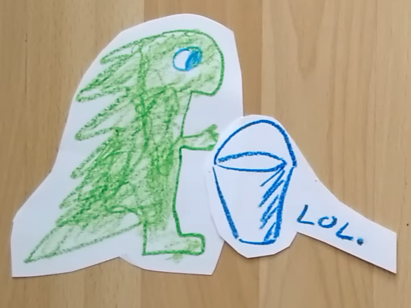
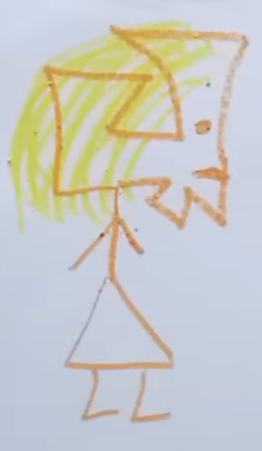

Történet

Volt egyszer, hol nem volt, volt egyszer egy óriási kisegér. Hatalmas nagy kisegér lába volt, hatalmas nagy kisegér arca volt, hatalmas nagy kisegér mája volt. Mer’, hogy kisegér értelmezési tartományban mérve volt ez hatalmas, tehát, hogy egy közepes gnú az, azért még mindig sokkal nagyobb.
Egy napon ez az óriási kisegér világot akart látni, ezért otthon maradt internetezni. Addig maradt, maradgált, amíg szembe nem jött vele a Nyíregyháza. Szervusz, Nyíregyháza. mondta az óriási kisegér (de tényleg óriási volt, hatalmas volt, terebélyes, gigantikus, bizánci, leviatán kisegér). - Hát te meg dögöljél meg, kisegér. Miért nincsen több munkalehetőség? – mondta a Nyíregyháza. - Énnekem te ne szóljál be mert kiszámítható vagy, mint a felületi gradiens. – mondta az óriási kisegér, azzal akarva-akaratlanul megszült egy indukciós főzőlapot.
Ez volt az a pillanat, amikor délkelet felől odajött a sárkány. És ott volt nála a vödör xdddd vödör xdd he he he milyen hülye szó már, hogy vödör! Ott volt benne az egész adóbevallás! (bevallási határidő: május 20 ugye nem felejtettük el) Ott volt benne a vödörbe xddd a munkavállalói értékpapír juttatási program elismert programként történő nyivántartásba vételére irányuló kérelemnek az állami adóhatóság által rendszeresített nyomtatványmintája. Hát, nézték egymást egy darabig majd azt mondta az óriási kisegér: - Énnekem egyébként kétségbevonhatatlanul hatalmamban áll nem itt lenni. – ment, (vessző) mendegélt.
Összetalálkozott ezután egy elképesztően ronda lánnyal. Tehát, hogy erősen irracionális szám volt az arcának Hausdorff-dimenziója. - Szia. Ocsmány vagy. – köszönt a kisegér. - Segítsé’ rajtam, kisegér! Nem t’ok szelfit csinálni me’ olyan rút vagyok, hogy kigyullad alattam a Instagram. – mondta a lány valahogy. - Egyet sefélj! E’megyünk a izéhez, azt segítek neked. – mondta a kisegér, akinél nem volt vödör xddddd he he he. Ezt követően addig mentek a lábukkal, amíg el nem jutottak az Instagramhoz magához.
Ott állott az Instagram előtt a nagy, büszke amerikai réti sas. Annyit mondott: - Passwort ist leider nicht mehr gültig, sie müssen sich weiterhin Kreisverwaltungsreferat melden. - Ah! Yo no soy marinero soy capitán. – mondta az ocsmány asszony és pontosan e végett nyertek bebocsátást.
Az Instagramon belül pedig ott volt a bölcs lézer. - Helló. –hazudta a lézer. - Helló. –affektálta egér. ( de, hogy tényleg hatalmas, óriási, Jézusom!) - Ez az asszony rendkívül minek van. – mondta a lézer – Tehát, hogy a háború is csúnya és a megmikrózott kefir se szép. De, hogy ez az asszony, ez egy tíztől egy jó nőig tartó skálán hát erős tízes. No de, lássátok, kivel van dolgotok. – mondta a lézer, oszt hirtelen Baranyává változott, ott meg mindent lehet.
Nagy boldogan ment hazafelé a kisegér, aki, ha eddig nem mondtam volna, ***** nagy volt, óriási- hatalmas volt nagyon. Na szóval hazaért aztán ott lefeküdt aludni az ágyába, ami nem volt más, mint egy vödör xdddddd hö hö hö xddd XDDDD jaaaaj, vödör!